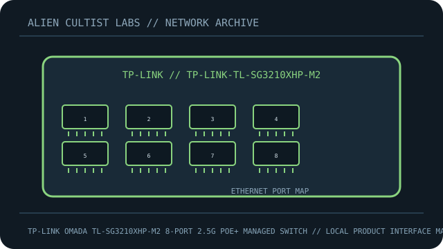

[ MODEL-SPECIFIC NETWORK HARDWARE ]
TP-Link Omada TL-SG3210XHP-M2 8-Port 2.5G PoE+ Managed Switch
Eight multi-gigabit PoE+ access ports and two 10G SFP+ uplinks in an Omada-managed switch. This record is limited to the exact named model; revisions and regional SKUs may differ.

MODEL IDENTIFICATION: Match the complete model number and revision on the manufacturer label before applying specifications. Published link rates are nominal, not measured application throughput.
Published specifications and compatibility
| Exact product | TP-Link Omada TL-SG3210XHP-M2 8-Port 2.5G PoE+ Managed Switch |
|---|---|
| Archive subcategory | Managed switches |
| Physical ports | 8 × 2.5GBASE-T RJ-45 PoE+; 2 × 10G SFP+ slots. |
| Host / chassis interface | Managed rack/desktop Ethernet switch; 10G SFP+ modules sold separately. |
| Standards / protocol | Layer 2+ managed switching, VLAN/QoS and Omada SDN management; 802.3at/af PoE+ on copper ports. |
| Rated link and switching rates | 2.5Gb/s access links, 10Gb/s SFP+ uplinks and 80Gb/s switching capacity. Fabric capacity is not a single flow throughput guarantee. |
| Power and thermal notes | Internal AC-powered design; manufacturer specifies up to 240W total PoE budget. Keep endpoint draw within the switch budget and port class. |
| Firmware / driver | Omada SDN or supported standalone management; firmware and controller support depend on hardware revision. |
| Compatibility guidance | Use Omada controller/standalone management supported for the hardware revision. SFP+ optics must match media and peer. Multi-gig endpoints require Cat5e or better and negotiated link support. |
Model-specific deployment notes
The M2 model provides 2.5GbE PoE+ copper access and two 10Gb SFP+ slots. Verify the hardware version on the label before choosing firmware or checking controller compatibility.
For a reproducible speed or interoperability test, record both link-partner models, cable/media, firmware, negotiated rate and test method. No benchmark is claimed in this archival record.
Manufacturer sources and documentation
- TP-LINK — official TP-Link Omada TL-SG3210XHP-M2 8-Port 2.5G PoE+ Managed Switch product specificationsManufacturer product page/specification reference for this model.
- TP-LINK — official support, manual or compatibility resourcesUse revision- and region-specific documentation for firmware, installation, media and compatibility decisions.
Source specifications describe rated capability; verify the label and current manufacturer documentation before purchase or deployment.